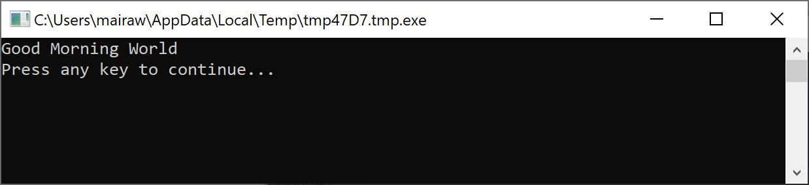
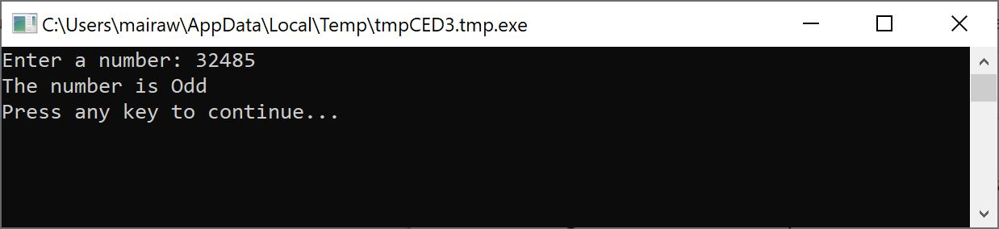
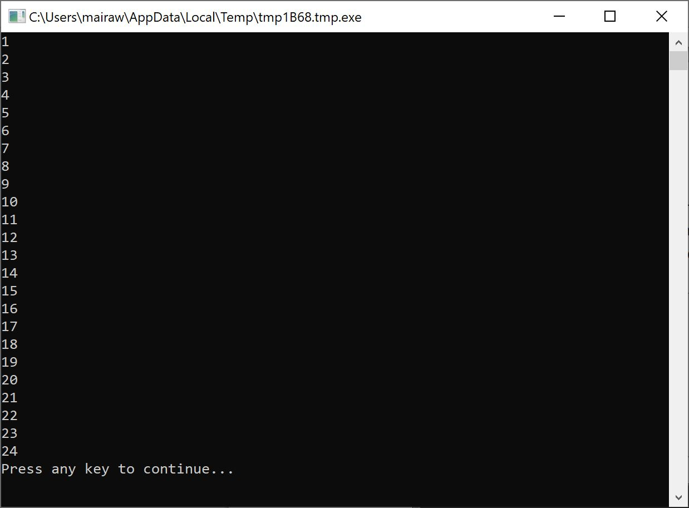
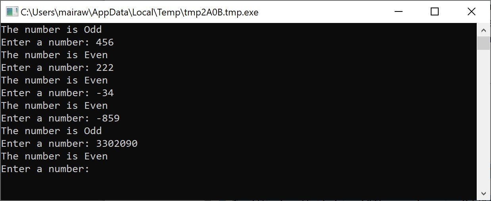

Going back to our first program, wouldn’t it be cool that instead of saying the general Hello World, we could say Good Morning World, or Good Evening World depending on the time of the day? For our next program, we’ll make the computer say Good Morning World if the time is earlier than 12PM; and Good Evening if the time is later than 12PM.
If (Clock.Hour < 12) Then
TextWindow.WriteLine("Good Morning World")
EndIf
If (Clock.Hour >= 12) Then
TextWindow.WriteLine("Good Evening World")
EndIf
Depending on when you run the program you’ll see either of the following outputs:

Figure 4.1 - Good Morning World
Figure 4.2 - Good Evening World
Let’s analyze the first three lines of the program. You’d have already figured out that this line tells the computer that if the Clock.Hour is lesser than 12, print out “Good Morning World.” The words If, Then and EndIf are special words that are understood by the computer when the program is run. The word If is always followed by a condition, which in this case is (Clock.Hour < 12). Remember that the parentheses are necessary for the computer to understand your intentions. The condition is followed by then and the actual operation to execute. And after the operation comes EndIf. This tells the computer that the conditional execution is over.
Note: In Small Basic, you can use the Clock object to access the current date and time. It also provides you a bunch of properties that allow you to get the current Day, Month, Year, Hour, Minutes, Seconds separately.
Between the then and the EndIf, there could be more than one operation and the computer will execute them all if the condition is valid. For example, you could write something like this:
If (Clock.Hour < 12) Then
TextWindow.Write("Good Morning. ")
TextWindow.WriteLine("How was breakfast?")
EndIf
In the program at the start of this chapter, you might have noticed that the second condition is kind of redundant. The Clock.Hour value could either be less than 12 or not. We didn’t really have to do the second check. At times like this, we can shorten the two if..then..endif statements to be just one by using a new word, else.
If we were to rewrite that program using else, this is how it will look:
If (Clock.Hour < 12) Then
TextWindow.WriteLine("Good Morning World")
Else
TextWindow.WriteLine("Good Evening World")
EndIf
And this program will do exactly the same as the other one, which brings us to a very important lesson in computer programming:
"In programming, there usually are many ways of doing the same thing. Sometimes one way makes more sense than the other way. The choice is left to the programmer. As you write more programs and get more experienced, you’ll start to notice these different techniques and their advantages and disadvantages."
In all the examples you can see how the statements between If, Else and EndIf are indented. This indentation is not necessary. The computer will understand the program just fine without them. However, they help us see and understand the structure of the program easier. Hence, it’s usually considered as a good practice to indent the statements between such blocks.
Now that we have the If..Then..Else..EndIf statement in our bag of tricks, let’s write out a program that, given a number, will say if it’s even or odd.
TextWindow.Write("Enter a number: ")
num = TextWindow.ReadNumber()
remainder = Math.Remainder(num, 2)
If (remainder = 0) Then
TextWindow.WriteLine("The number is Even")
Else
TextWindow.WriteLine("The number is Odd")
EndIf
And when you run this program, you’ll see an output like:

Figure 4.3 - Even or Odd
In this program, we’ve introduced another new useful operation, Math.Remainder. And yes, as you already might have figured out, Math.Remainder will divide the first number by the second number and then give back the remainder.
Remember, in the second chapter you learned that the computer processes a program one statement at a time, in order from the top to bottom. However, there’s a special statement that can make the computer jump to another statement out of order. Let’s take a look at the next program.
i = 1
start:
TextWindow.WriteLine(i)
i = i + 1
If (i < 25) Then
Goto start
EndIf

Figure 4.4 - Using Goto
In the program above, we assigned a value of 1 to the variable i. And then we added a new statement which ends in a colon (:)
start:This is called a label. Labels are like bookmarks that the computer understands. You can name the bookmark anything and you can add as many labels as you want in your program, as long as they are all uniquely named.
Another interesting statement here is:
i = i + 1This just tells the computer to add 1 to the variable i and assign it back to i. So if the value of i was 1 before this statement, it will be 2 after this statement is run.
And finally,
If (i < 25) Then
Goto start
EndIf
This is the part that tells the computer that if the value of i is less than 25, start executing statements from the bookmark start.
Using the Goto statement you can make the computer repeat something any number of times. For example, you can take the Even or Odd program and modify it like below, and the program will run for ever. You can stop the program by clicking on the Close (X) button on the top right corner of the window.
begin:
TextWindow.Write("Enter a number: ")
num = TextWindow.ReadNumber()
remainder = Math.Remainder(num, 2)
If (remainder = 0) Then
TextWindow.WriteLine("The number is Even")
Else
TextWindow.WriteLine("The number is Odd")
EndIf
Goto begin

Figure 4.5 - Even or Odd running endlessly